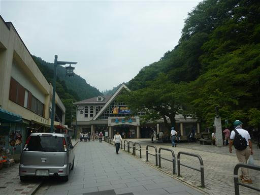
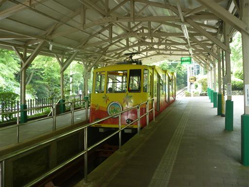
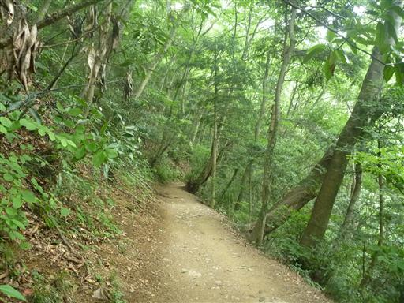
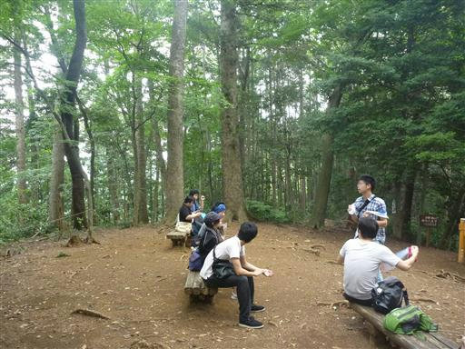
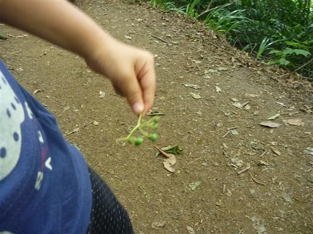
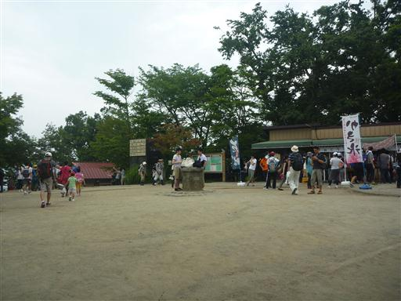
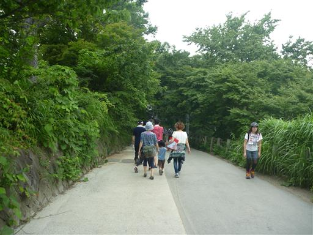

高尾山
| 日付 | 2013年7月13日（土） |
|---|---|
| 山域 | 高尾周辺 |
| メンバー | 家族（長女・2歳） |
| 山行形態 | 子連れ日帰り |
| アクセス | 車、ケーブルカー |
| ルート (Map) | ケーブルカー高尾山駅 (10:51) - 4号路 - (12:43) 高尾山 (13:02) - 1号路 - (13:24) ケーブルカー高尾山駅 |
先週に引き続き再度高尾山に行くことにする。
山登りの練習のため、先週と全く同じ道を歩き、
前回よりどの程度歩けるようになるかを確認する予定だ。
今日は3連休の初日で道路は大渋滞。
先週より早い時間に出発したのに到着したのは1時間以上遅く、この渋滞は完全に誤算だった。
2時間を超える渋滞ドライブは子供も退屈だったようで、あまり機嫌がよくない。

大好きなケーブルカーに乗って子供の機嫌を取りつつ上に向かう。

ケーブルカーを降りてようやく登山開始だ。標高450m。
しかし歩きだして100m程進んだところで抱っこを要求される。
お菓子をあげて機嫌を取りつつ何とか先に進む。

前回同様、4号路に入っていく。登山道に入っても抱っこ要求は続く。
11時を過ぎてもう昼食の時間だ。到着が遅れたせいですべての歯車が狂い始めている。
リンゴケーキをあげて歩き始めても5分歩いたら抱っこ、おにぎりをあげても5分歩いたら抱っこ…

ようやく中間地点のベンチに到着。
前回はここまでノンストップで来れたのだが、今回はここまでですでに1時間経過だ。

途中で何かの実を拾って遊びだす。たくさんの実を手に入れて満足そうだ。

何度も何度も励まし、ようやく高尾山の山頂に到着する。標高599m。
なんとケーブルカーの駅から2時間以上もかかってしまった。

下山は歩きだして1分で抱っこ要求。お菓子を食べたし疲れは取れているはずなのだが…
これ以上歩かせるのはこちらの精神力が持たないので、肩車をして下ることにする。

長時間の肩車はつらいので早足で歩いて高尾山駅まで下る。
今回の山登りは移動・登山とも散々な結果となってしまった。

他の山行記録